Executive Overview
This project transforms a management accounting case into a decision-intelligence system. It demonstrates how structured accounting data can be used to diagnose cost variances, test pricing and cost scenarios, identify overhead allocation distortions, and recommend a strategic implementation path.
Interactive Dashboard Module
The repository includes a Streamlit dashboard with four modules:
Executive Summary
Shows key metrics, recommended strategy, and decision matrix.
CVP Simulator
Allows users to change price, variable cost, fixed cost, and volume.
Variance Diagnosis
Classifies variances and suggests managerial actions.
ABC Intelligence
Highlights costing distortion between traditional and ABC methods.
Key Managerial Insights
Static budgets reduce agility
Traditional annual budgets can become outdated when input prices, demand, and promotions change quickly.
Variance timing matters
Delayed reporting turns variance analysis into a post-mortem instead of an early-warning control system.
ABC reveals hidden distortion
Traditional overhead allocation can over-cost high-volume products and under-cost low-volume complex products.
Phased transformation is practical
A phased ABC and flexible-budgeting rollout balances analytical accuracy with implementation feasibility.
Dashboard & Website Screenshots
These screenshots show the interactive dashboard and the GitHub Pages-style project showcase prepared for portfolio presentation.
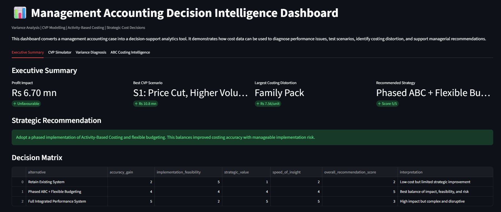
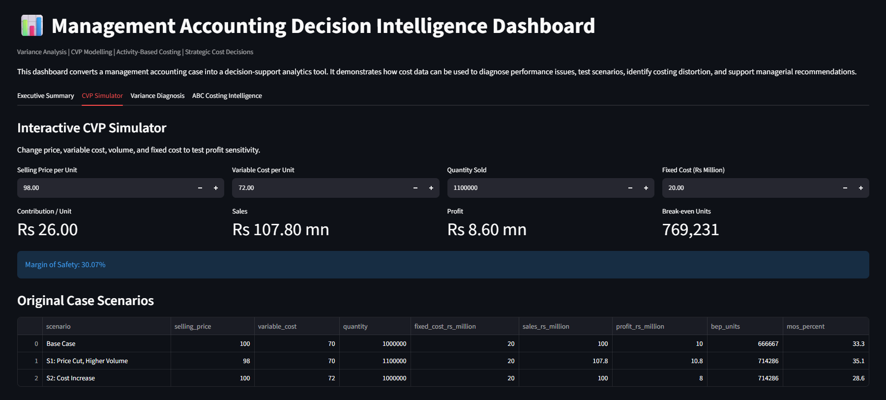
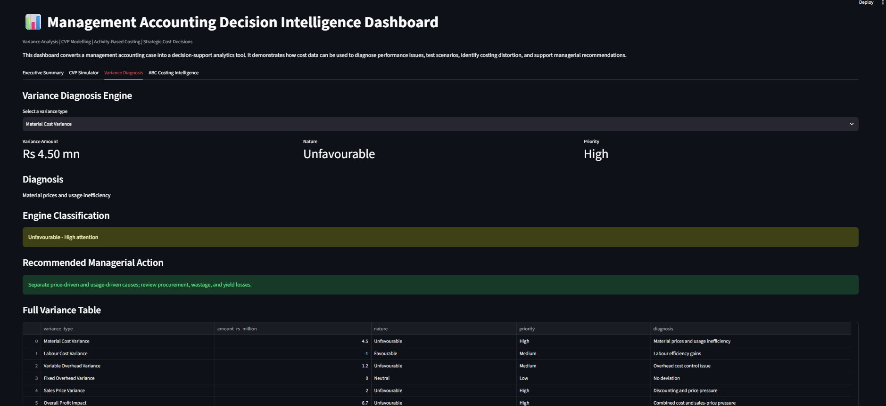
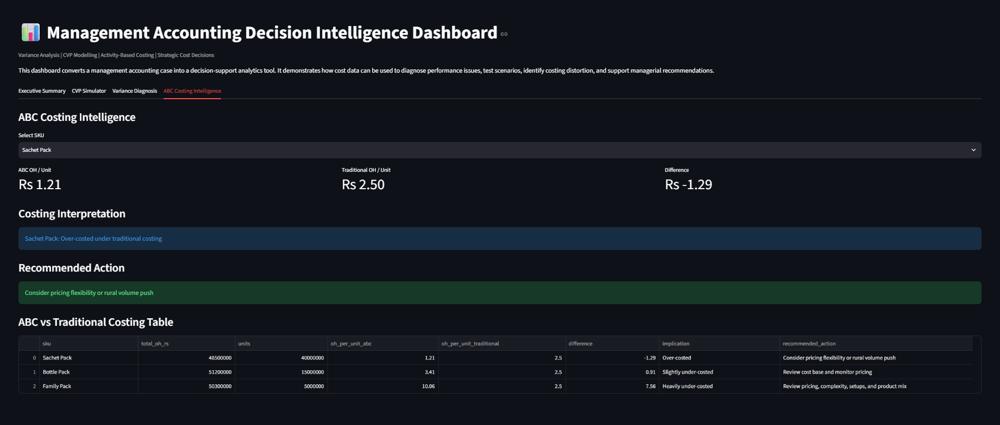
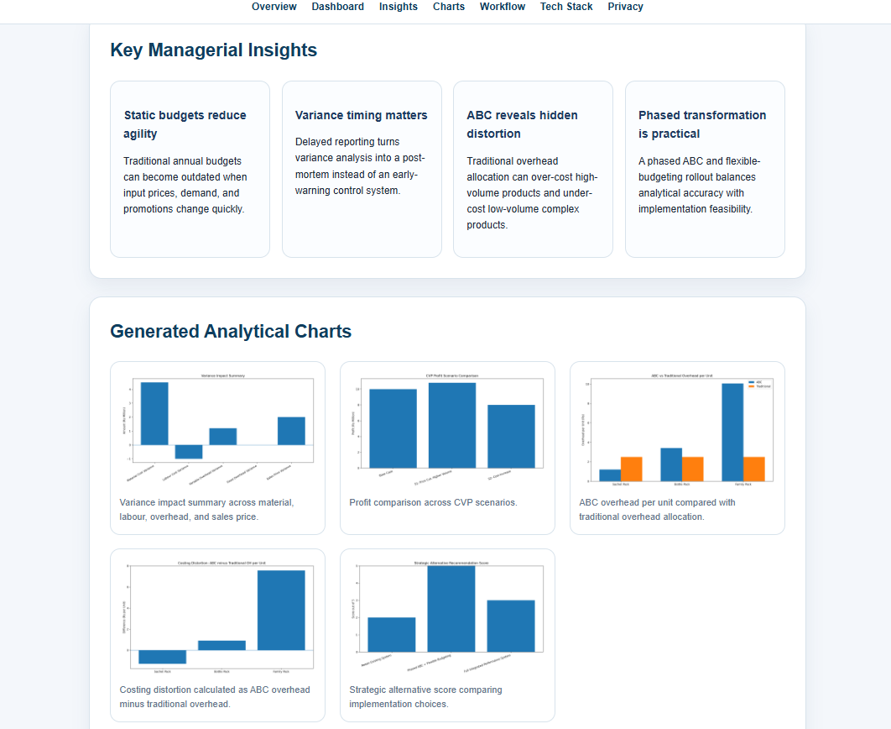
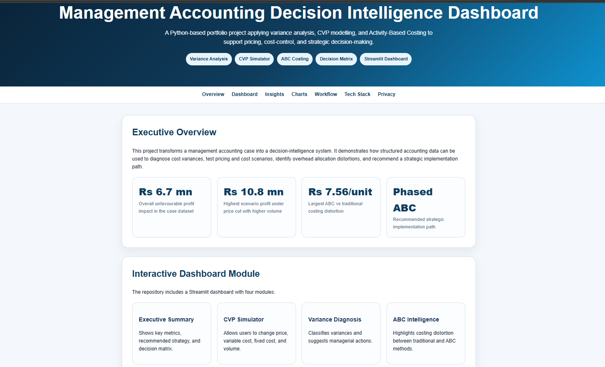
Generated Analytical Charts
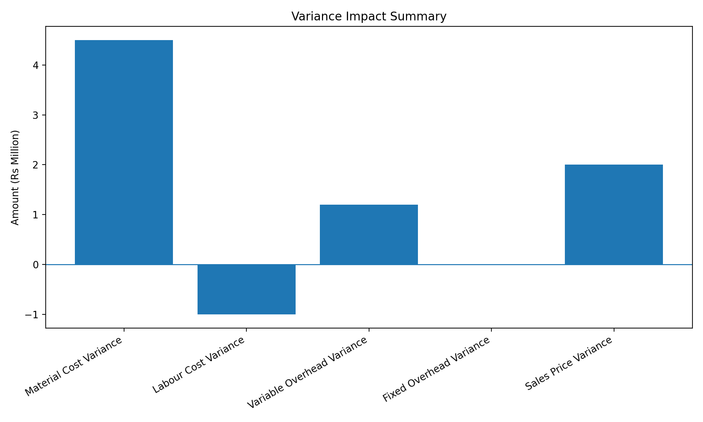
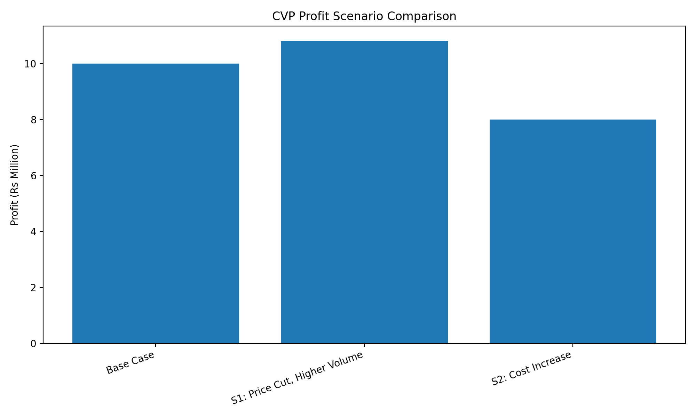
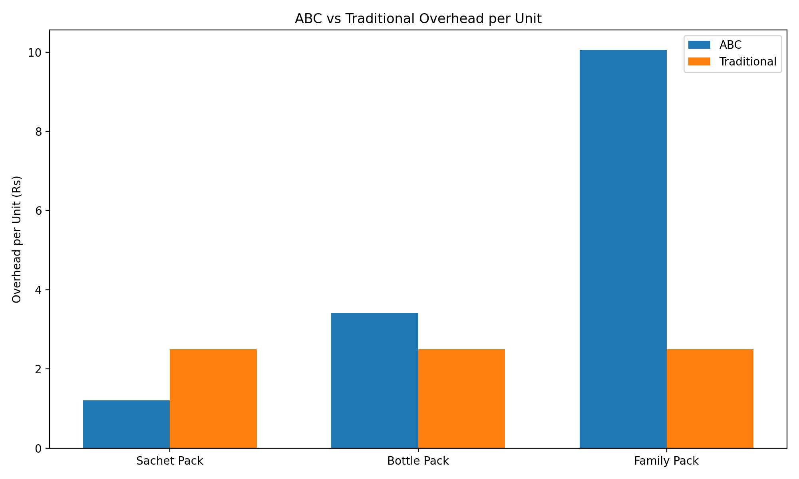
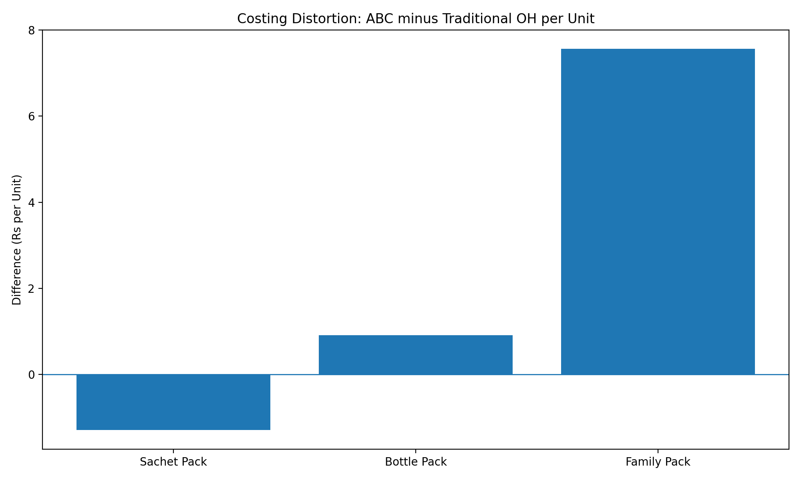
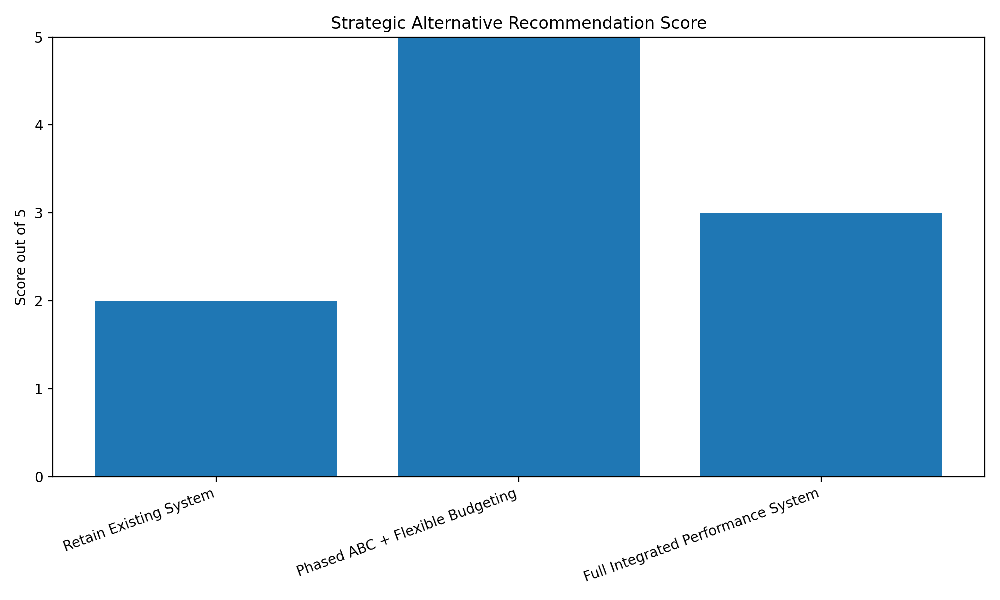